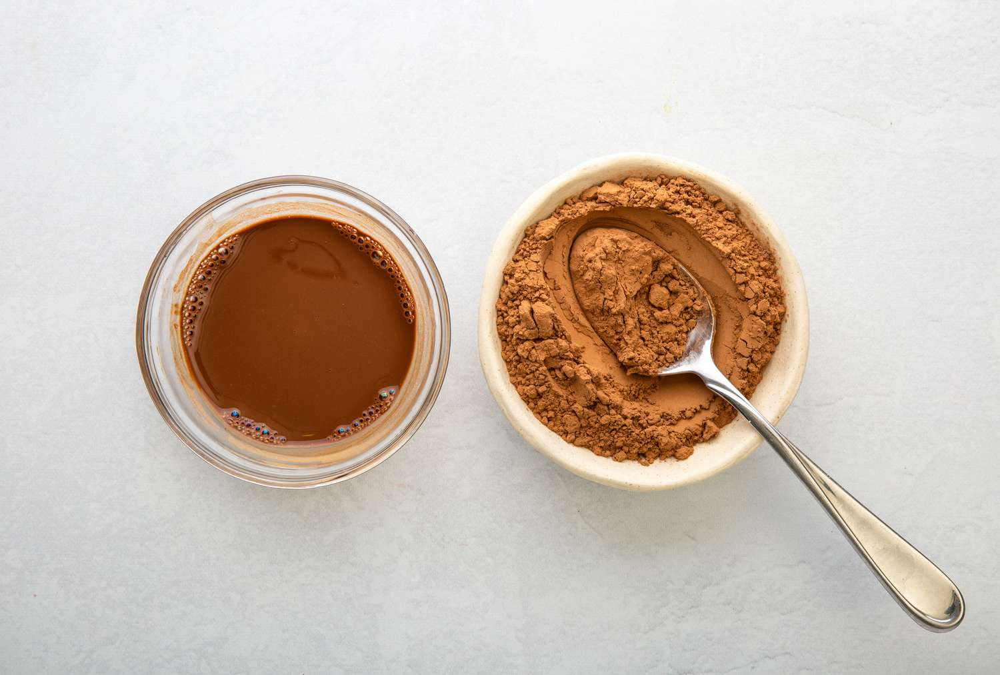

Hot cocoa is a colloidal suspension of solid particles in a liquid that eventually loses stability and separates into phases. Investigate the mechanisms of sedimentation and the structural evolution of particles in the beverage. How do the composition, temperature, and preparation conditions affect the system’s stability and the rate of phase separation?

The food industry offers a wide variety of beverages, and among them, cocoa remains a universally loved favorite. However, few people consider the complex physical and chemical processes occurring inside this classic drink. From a scientific perspective, cocoa is a thermally unstable, coarsely dispersed heterogeneous system that simultaneously combines the properties of both a suspension and an emulsion. A suspension is a liquid containing solid, insoluble particles that settle to the bottom over time, whereas an emulsion consists of immiscible liquid droplets of another substance distributed within a fluid. Over time, an emulsion naturally separates, causing the lower-density liquid to rise to the surface. As a dispersed system, cocoa represents a medium where one substance, the cocoa powder, is crushed and distributed throughout the volume of another. The overall behavior of the beverage directly depends on the size of these floating particles, which span three levels of dispersity. The coarse-dispersed or macrodispersed fraction includes particles larger than one hundred nanometers. The microdispersed or colloidal fraction ranges from one to one hundred nanometers and comprises swollen starch macromolecules and complex protein structures. Finally, the highly dispersed fraction consists of particles smaller than one nanometer, representing sugar molecules, soluble salts, and organic acids. The entire behavior of a cocoa drink is built upon three distinct phases. The first is the dispersion medium, which is the liquid used to dissolve the cocoa powder, typically milk or water. Interestingly, milk itself is a complex fluid, acting as an emulsion of fat in water and a sol of proteins, meaning a colloidal solution where proteins appear dissolved but are actually too large to be truly soluble. The second phase is the solid dispersed phase, which forms the fundamental component of the suspension and consists of insoluble cocoa particles like fiber, starch, and large conglomerates of protein molecules ranging from one to one hundred micrometers in size. The third phase is the liquid dispersed phase, the foundation of the emulsion, which consists of cocoa butter that melts and turns into microscopic fat droplets at thirty-four degrees Celsius, floating freely without mixing into the surrounding liquid. The structure of cocoa undergoes constant evolution, transitioning through four distinct stages from the moment the powder is mixed with the liquid until the finished drink cools completely. The first stage involves mixing and the solvation of the cocoa powder. The hot liquid dissolves soluble components such as sugar, certain proteins, and polyphenols, while initiating the solvation of polymers. Solvation occurs when solvent molecules surround and form a protective shell around solute particles; when water is the solvent, this process is called hydration. During this stage, starch and dietary fibers swell and bind water. Starch granules, made of amylose and amylopectin chains packed into dense structures, undergo gelatinization in the hot liquid as thermal energy forces water molecules inside, forming hydrogen bonds with the hydroxyl groups. The granules swell manifold, amylose chains leach out, and they intertwine into a three-dimensional network that traps water molecules, turning the liquid into a viscous paste. Simultaneously, rigid dietary fibers like cellulose, pectin, and hemicellulose bind water through two mechanisms: capillary or physical binding, where water is mechanically trapped inside porous, spongy fiber particles by capillary pressure, and adsorptive or chemical binding, where polar groups on the fiber surface attract water dipoles via electrostatic forces. This binding increases viscosity, slows down settling, and retains moisture, while the cocoa butter melts instantly amid maximum entropy and turbulent flows. The second stage begins during the first few minutes after mixing stops. As the kinetic energy from stirring subsides, intermolecular forces take over. Due to residual fats, the cocoa particles exhibit hydrophobic properties and naturally seek to minimize their contact area with water. This triggers coagulation or flocculation, causing small particles to collide and stick together into larger flakes. According to Stokes' law, which determines the rate of sedimentation, as the particle radius increases, the settling velocity grows exponentially. Simultaneously, the microscopic droplets of cocoa butter undergo coalescence, merging into larger drops. Because their density is lower than that of water, these fat droplets slowly float upward, eventually forming an oil film on the surface of the beverage. The third stage is marked by active sedimentation, where the beverage physically separates along the height of the cup, leaving free fats accumulated at the top and solid flakes deposited at the bottom. If the cocoa is prepared with milk, this sedimentation process takes significantly longer because milk proteins act as surfactants. These surface-active agents concentrate at the interface of the two media and lower the surface tension, stabilizing the mixture. The final stage is thermal regulation. As the temperature drops, the viscosity of the medium increases, which further slows down any residual movement of the particles. When the temperature falls below thirty to thirty-four degrees Celsius, the cocoa butter begins to crystallize, causing the fat droplets to solidify throughout the beverage. Furthermore, if there is an excess of starch in the mixture, partial gelatinization can occur, effectively transforming the once-liquid dispersed system into a gel. Ultimately, a mug of cocoa is a battleground between thermodynamic properties trying to separate the drink and kinetic factors working to slow that separation down, meaning that whether or not you stir your cocoa with a spoon, you are actively choosing a side in this physical war.